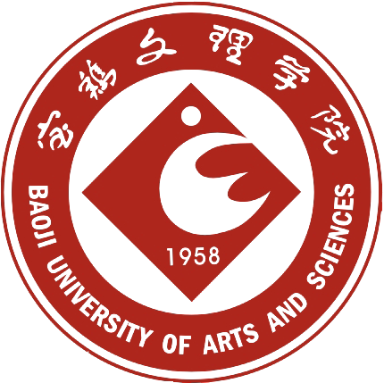

宝鸡文理学院
宝文理的青春岁月
2016-07-11 in 宝鸡
宝鸡文理学院是一所以教师教育为主要特色，拥有哲学、经济学、法学、教育学、文学、历史学、理学、工学、管理学、艺术学等多学科的省属普通本科高等学校。其前身是1958年创办的宝鸡大学（本科），[展开]1963年因国家经济困难停办，1975年在此基础上成立陕西师范大学宝鸡分校，1978年经国务院批准为宝鸡师范学院，1992年经原国家教委批准，与1984年新设立的宝鸡大学合并，更名为宝鸡文理学院。学校位于炎帝故里、周秦文化发祥地、陕西省第二大工业城市——宝鸡市，地处宝鸡国家高新技术产业开发区，南靠秦岭，北临渭河，依山傍水，环境宜人。占地面积1100亩。[收起]
文理新闻
- 我校青年师生积极收看纪念五四运动100周年大会
- 2019年度宝鸡市大学生征兵宣传暨征兵工作在我校启动
- 我校参加全国大学生征兵工作网络视频会议
- 我校获批2项陕西省高校科协学术交流项目
会议活动
- 我校青年师生积极收看纪念五四运动100周年大会
- 九三学社宝鸡文理学院支社开展扶贫救助捐赠主题活动
- 校长郭霄鹏深入团委等职能部门调研工作
- 民进宝鸡文理学院总支受民进宝鸡市委会好评
- 我校赴镇安县推进高校特色产业扶贫工作
- 我校举办“青春心向党·建功新时代 ”特别主题团日活动
- 我校召开民主党派负责人联席会议
- 我校召开2019年全面从严治党工作会议
- 我校师生在第三届“中国梦·青年影像盛典”中获奖
- 我校师生在第九届“华文杯”全国学前教育师范生教学技能大赛中获佳绩